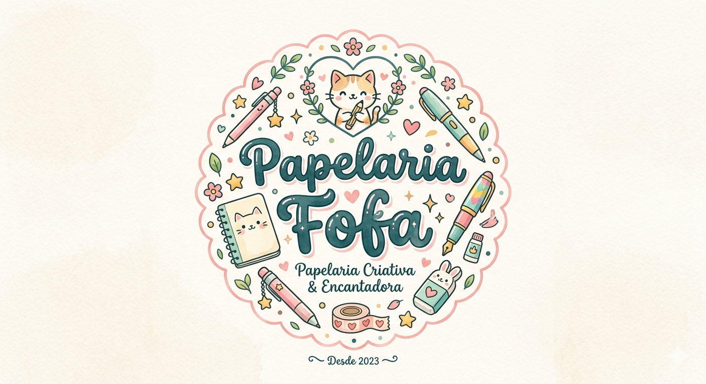
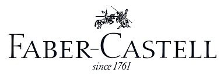
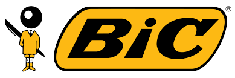

Essa loja é feita para você que gosta de coisas coloridas, às vezes úteis, às vezes inúteis, porém sempre fofas! Nossa missão é trazer produtos de qualidade para tornar sua rotina de estudos e administrativas mais divertidas e fofas!!!


Confira as perguntas mais frequentes!